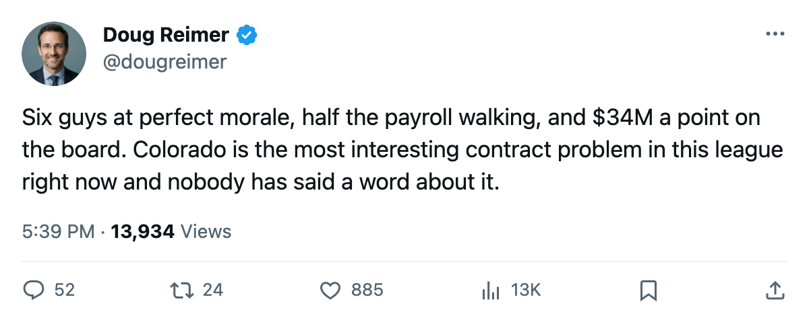
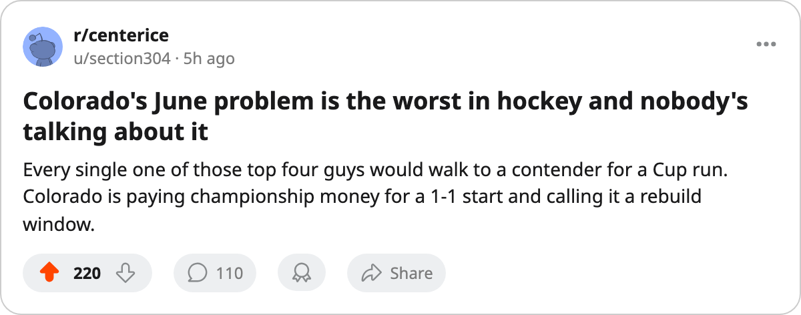

Colorado's Four Biggest Names Are All at 100 Morale, All on Expiring Deals, and the Team Pays $34.05M a Point
The club nobody has covered has $33.61M walking in June and the second-worst per-point rate in the league. Every man carrying that salary says he loves it here.
 Doug ReimerAnalytics editor, ex-video coach · The Slot Report
Doug ReimerAnalytics editor, ex-video coach · The Slot Report
The piece
Colorado's total expiring payroll sits at $33.61M against a $68.11M salary. Four men carry most of it:  Peter Forsberg89 at $9.90M,
Peter Forsberg89 at $9.90M,  Paul Kariya83 at $10.11M,
Paul Kariya83 at $10.11M,  Teemu Selanne80 at $6.94M, and
Teemu Selanne80 at $6.94M, and  Milan Hejduk82 at $2.50M. Every one of them carries a morale reading of 100 on the Bureau's Morale Scale.
Milan Hejduk82 at $2.50M. Every one of them carries a morale reading of 100 on the Bureau's Morale Scale.
The per-point bill tells the rest.  Colorado Avalanche has earned 2 points from 2 games at $34.05M per point, the second-worst rate in the league behind
Colorado Avalanche has earned 2 points from 2 games at $34.05M per point, the second-worst rate in the league behind  Florida Panthers at $57.33M. The club's payroll is the third-highest in hockey. The revenue is $37.59M and the profit is $28.33M. The math works on the bottom line because the wins do not.
Florida Panthers at $57.33M. The club's payroll is the third-highest in hockey. The revenue is $37.59M and the profit is $28.33M. The math works on the bottom line because the wins do not.
| Player | Pos | Overall | Salary | Morale | GP | Pts |
|---|---|---|---|---|---|---|
| Peter Forsberg | LW | 95 | $9.90M | 100 | 2 | 3 |
| Paul Kariya | LW | 89 | $10.11M | 100 | 2 | 4 |
| Teemu Selanne | RW | 86 | $6.94M | 100 | 2 | 3 |
| Milan Hejduk | RW | 88 | $2.50M | 100 | 2 | 3 |
Those four players sit 3rd, 26th, 33rd, and 22nd in the Book's overall grades. Forsberg carries a 99 in passing and a 99 in deking. Kariya has an 89 overall with 96 speed. Selanne is 86 with 96 speed and 94 accuracy. Hejduk is 88 with 95 puck control.
The Development Index has found nothing on any Colorado Avalanche player in either direction. No risers, no fallers. The Bureau's form term reads the same as the Book's base for every man on this roster who has played. That is the same zero-movement pattern that defined the 7 clubs the Index found nothing in last season, all of which missed the playoffs.
The Morale Contradiction
Colorado Avalanche's club average morale is 97.4, the fourth-highest in the league behind  Vancouver Canucks at 99.5,
Vancouver Canucks at 99.5,  Tampa Bay Lightning and Florida Panthers at 98.5, and
Tampa Bay Lightning and Florida Panthers at 98.5, and  Los Angeles Kings at 98.4. The six men with one year left and 67 or better rated are at morale 100, except
Los Angeles Kings at 98.4. The six men with one year left and 67 or better rated are at morale 100, except  Jim McKenzie58 at 89.
Jim McKenzie58 at 89.
The usual reading of perfect morale is a room that trusts the plan. The usual reading of expiring deals is a room waiting to leave. Colorado Avalanche carries both at once, and the 2 points from 2 games says the plan has not worked yet.
The injury ledger has zero spells for Colorado Avalanche this season. Forsberg, Kariya, Selanne, and Hejduk have each played 2 games. That is 8 man-games from the four top-paid players in a 2-game sample, so they are not sitting. They are simply not producing enough to change the per-point number.
What the Contract Ledger Shows
The Bureau's Contract Ledger lists Colorado Avalanche with the third-highest payroll at $68.11M. Only  New York Rangers at $92.95M and
New York Rangers at $92.95M and  Toronto Maple Leafs at $89.94M spend more. The per-point gap between Colorado Avalanche and the clubs above it is instructive: Toronto Maple Leafs pays $11.24M per point on $89.94M for 8 points. New York Rangers pays $18.59M per point on $92.95M for 5 points. Colorado Avalanche pays $34.05M per point on $68.11M for 2 points.
Toronto Maple Leafs at $89.94M spend more. The per-point gap between Colorado Avalanche and the clubs above it is instructive: Toronto Maple Leafs pays $11.24M per point on $89.94M for 8 points. New York Rangers pays $18.59M per point on $92.95M for 5 points. Colorado Avalanche pays $34.05M per point on $68.11M for 2 points.
Colorado Avalanche's revenue of $37.59M and profit of $28.33M mean the franchise is not in financial trouble. The ticket price is $82, the attendance is 14,405. The Prestige Index has Colorado Avalanche at 659, 7th in the league.
The June Question
Four of the top 30 expiring players by overall in the entire league play for one club. The next-closest is New York Rangers with 4 players in that tier, but New York's total salary for those four is distributed differently and the club's payroll of $92.95M absorbs a larger percentage before it hurts. Colorado Avalanche loses nearly half its salary in one summer and gets no draft compensation if the men walk in free agency.
A morale reading of 100 means they are not angry. Whether that keeps them here is a separate question. A player at 100 who has a better offer elsewhere takes the better offer. A player at 89 who loves the city stays.
The next date that matters is what the calendar has as free agency closes: 2006-07-28, 283 days from today. The 2 games in the sample will not make or break the re-signing decisions. But the pattern holds: the clubs that walked their stars did it because the room was unhappy, and the clubs that kept them paid above the market. Colorado Avalanche has not decided which of those two it is yet.

